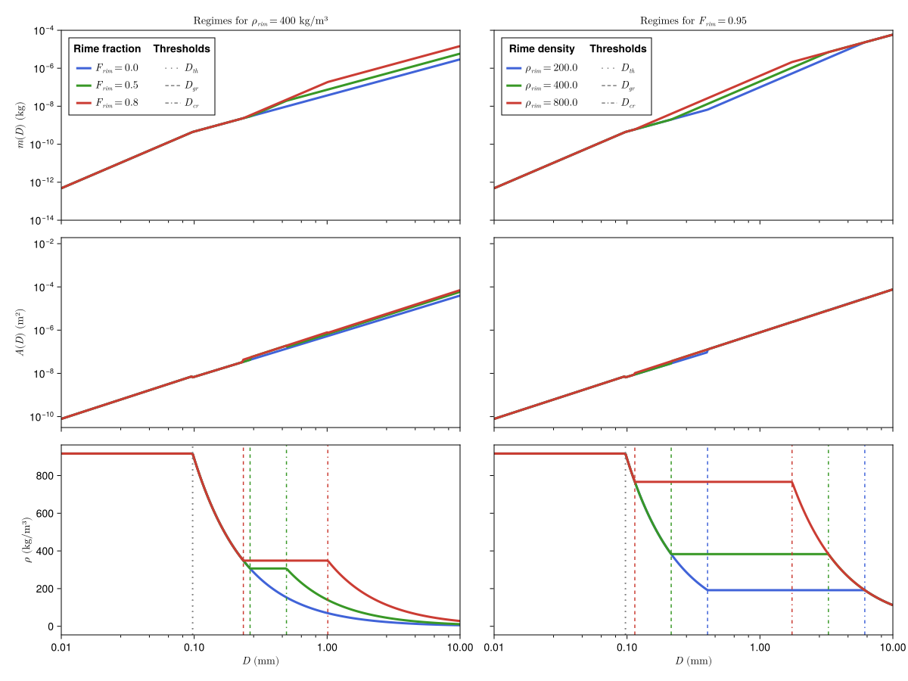
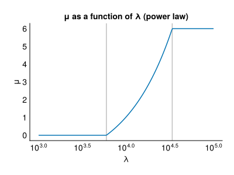
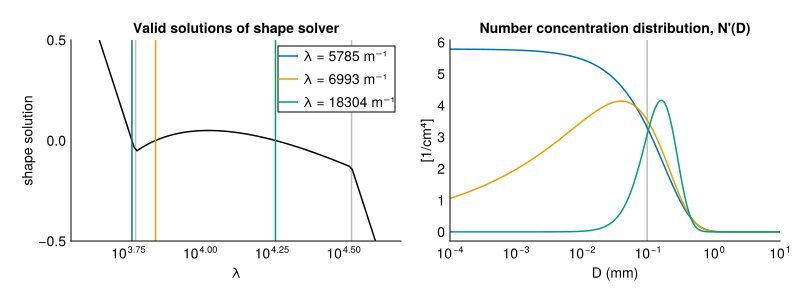
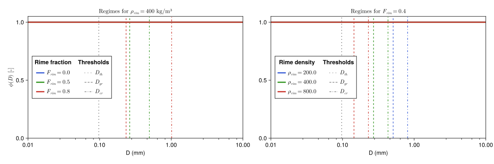
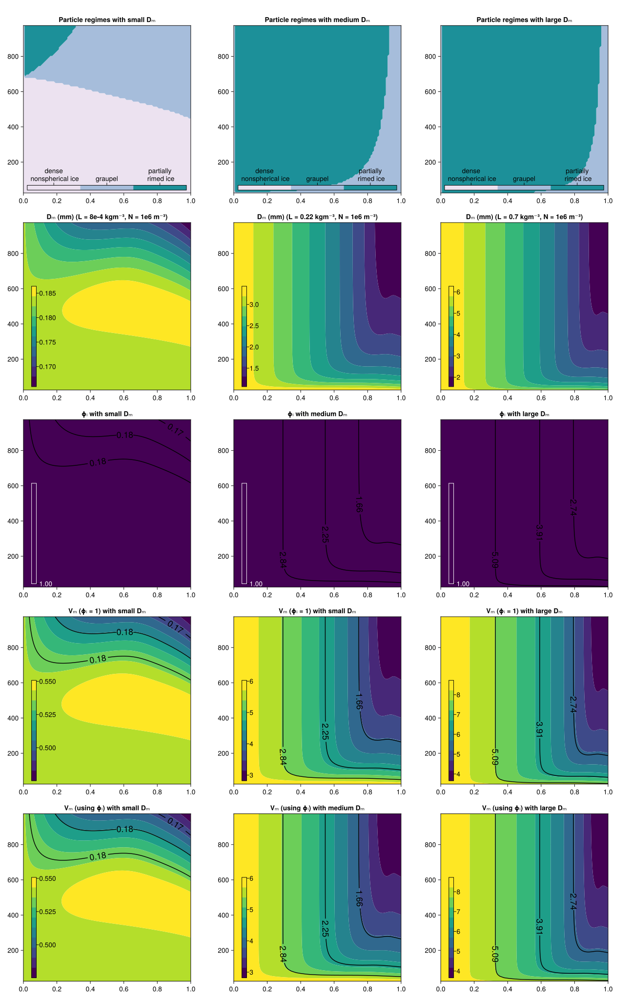
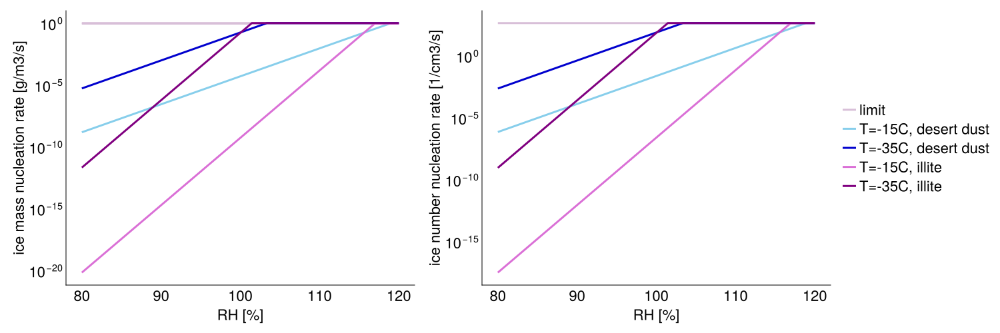
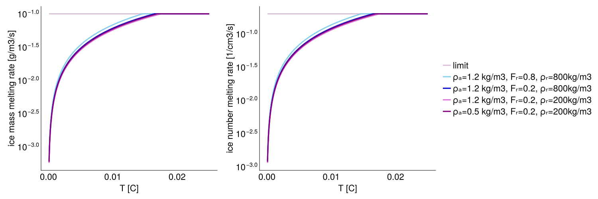

P3 Scheme
The P3Scheme.jl module implements the predicted particle properties (P3) scheme for ice-phase microphysics developed by [22]. The P3 scheme is a 2-moment, bulk scheme involving a single ice-phase category with 4 degrees of freedom: total ice content, rime content, rime volume, and number concentration. Traditionally, cloud ice microphysics schemes use various predefined categories (such as ice, graupel, or hail) to represent ice modes, but the P3 scheme sidesteps the problem of prescribing transitions between ice categories by adopting a single ice category and evolving its properties. This simplification aids in attempts to constrain the scheme's free parameters.
The prognostic variables are:
| Variable | Units | Description |
|---|---|---|
| $N_\mathrm{ice}$ | m$^{-3}$ | number concentration |
| $L_\mathrm{ice}$ | kg m$^{-3}$ | total ice particle mass content |
| $L_\mathrm{rim}$ | kg m$^{-3}$ | rime mass content |
| $B_\mathrm{rim}$ | m$^3$ m$^{-3}$ | rime volume (volume of rime per total air volume) |
From these, we derive the following rime quantities:
- $F_{rim} = \frac{L_{rim}}{L_{ice}}$, the rime mass fraction,
- $ρ_{rim} = \frac{L_{rim}}{B_{rim}}$, the rime density.
The original paper [22] uses the symbol $q$ to denote the mass of a tracer per volume of air (named mass mixing ratio). In our documentation of the 1-moment and 2-moment schemes we used $q$ to denote the mass of a tracer per mass of air (specific content). To keep the notation consistent between the 1,2-moment schemes and P3, and to highlight the difference between normalizing by air mass or volume, we denote the mass of a tracer per volume of air as $L$ (named content).
Assumed particle size relationships
The mass $m$ and projected area $A$ of particles as a function of maximum particle dimension $D$ are piecewise functions with variable thresholds described by the following table,
| Particle properties | Size condition | Rime condition | m(D) relation | A(D) relation |
|---|---|---|---|---|
| small, spherical ice | $D < D_{th}$ | $\frac{π}{6} ρ_i D^3$ | $\frac{π}{4} D^2$ | |
| large, unrimed ice | $D_{th} < D$ | $L_{rim} = 0$ | $α_{va} D^{β_{va}}$ | $γ D^{σ}$ |
| dense nonspherical ice | $D_{th} < D < D_{gr}$ | $L_{rim} > 0$ | $α_{va} D^{β_{va}}$ | $γ D^{σ}$ |
| graupel (completely rimed, spherical) | $D_{gr} < D < D_{cr}$ | $L_{rim} > 0$ | $\frac{π}{6} ρ_g D^3$ | $\frac{π}{4} D^2$ |
| partially rimed ice | $D_{cr} < D$ | $L_{rim} > 0$ | $\frac{α_{va}}{1-F_{rim}} D^{β_{va}}$ | $F_{rim} \frac{π}{4} D^2 + (1-F_{rim})γ \ D^{σ}$ |
where $D_{th}$, $D_{gr}$, $D_{cr}$, and $ρ_g$ are determined by relations below; $ρ_i$, $β_{va}$, $α_{va}$, $γ$, and $σ$ are fixed.
Symbol definitions
| Symbol | Value | Units | Description |
|---|---|---|---|
| $D_{th}$ | $\text{m}$ | small, spherical ice threshold | |
| $D_{gr}$ | $\text{m}$ | graupel threshold | |
| $D_{cr}$ | $\text{m}$ | partially rimed ice threshold | |
| $ρ_i$ | 916.7 | $\text{kg m}^{-3}$ | cloud ice density |
| $ρ_g$ | $\text{kg m}^{-3}$ | bulk density of graupel | |
| $ρ_{rim}$ | $\text{kg m}^{-3}$ | rime density | |
| $ρ_d$ | $\text{kg m}^{-3}$ | bulk density of unrimed ice | |
| $F_{rim}$ | – | rime mass fraction | |
| $β_{va}$ | 1.9 | – | dimensionless parameter from [23] (based on measurements of vapor diffusion and aggregation in midlatitude cirrus) |
| $α_{va}$ | $7.38 \; 10^{-11} \; 10^{6 β_{va} - 3}$ | $\text{kg m}^{-β_{va}}$ | parameter modified for units from [23] in base SI units (also based on measurements of vapor diffusion and aggregation in midlatitude cirrus) |
| $γ$ | 0.2285 | $\text{m}^{2-σ}$ | parameter fit from aggregates of side planes, columns, bullets, and planar polycrystals; see Table 1 in [24] |
| $σ$ | 1.88 | – | dimensionless parameter fit from aggregates of side planes, columns, bullets, and planar polycrystals; see Table 1 in [24] |
The first threshold, $D_{th}$, is solely determined by the free parameters:
\[D_{th} = \left( \frac{π ρ_i}{6α_{va}} \right)^{\frac{1}{β_{va} - 3}}\]
The remaining thresholds: $D_{gr}$, $D_{cr}$, as well as the bulk density of graupel $ρ_g$, and the bulk density of the unrimed part $ρ_d$ form a system of equations:
\[\begin{align*} D_{gr} &= \left( \frac{6α_{va}}{π ρ_g} \right)^{\frac{1}{3 - β_{va}}} \\ D_{cr} &= \left[ \left(\frac{1}{1-F_{rim}} \right) \frac{6 α_{va}}{π ρ_g} \right]^{\frac{1}{3 - β_{va}}} \\ ρ_g &= ρ_{rim} F_{rim} + (1 - F_{rim}) ρ_d \\ ρ_d &= \frac{6α_{va}(D_{cr}^{β_{va} - 2} - D_{gr}^{β_{va} - 2})}{π \ (β_{va} - 2)(D_{cr}-D_{gr})} \end{align*}\]
Unlike (REFS), which solve the system of equations with iterative methods, we here derive an analytical solution for $ρ_d$ in terms of $ρ_{rim}$ and $F_{rim}$.
Click here to see the derivation
To derive the expression for $ρ_d$ we first observe that $D_{cr}$ is proportional to $D_{gr}$,
\[D_{cr} = (1 - F_{rim})^{-1/(3 - β_{va})} \left( \frac{6 α_{va}}{π ρ_g} \right)^{1/(3 - β_{va})} = (1 - F_{rim})^{-1/(3 - β_{va})} D_{gr} ≡ k D_{gr},\]
where we define $k ≡ (1 - F_{rim})^{-1/(3 - β_{va})}$. This implies $k^{β_{va} - 2} = (1 - F_{rim})k$. It can also be shown that
\[\frac{6α_{va}}{π}D_{gr}^{β_{va} - 2} = ρ_g D_{gr}.\]
We now rewrite terms in the numerator and denominator of the expression for $ρ_d$,
\[\begin{align*} D_{cr} - D_{gr} &= (k - 1) D_{gr} \\ % \frac{6α_{va}}{π} \left[ D_{cr}^{β_{va} - 2} - D_{gr}^{β_{va} - 2} \right] &= \frac{6α_{va}}{π} \left[ (k^{β_{va} - 2} - 1) D_{gr}^{β_{va} - 2} \right] = ((1 - F_{rim})k - 1) ρ_g D_{gr}. \end{align*}\]
Then, we substitute these expressions into the equation for $ρ_d$ (above), to obtain,
\[\begin{align*} ρ_d &= \frac{((1 - F_{rim}) k - 1) ρ_g D_{gr}}{(β_{va} - 2)(k - 1)D_{gr}} \\ &= \frac{((1 - F_{rim}) k - 1)}{(β_{va} - 2)(k - 1)} ( ρ_{rim} F_{rim} + (1 - F_{rim}) ρ_d ) \end{align*}\]
and rearrange to obtain the expression for $ρ_d$ below.
We obtain the following expression for $ρ_d$
\[ρ_d = \frac{ ρ_{rim} F_{rim} }{ \frac{(β_{va} - 2)(k - 1)}{(1 - F_{rim}) k - 1} - (1 - F_{rim}) }\]
Given $ρ_d$, we can obtain $ρ_g$, $D_{gr}$, and $D_{cr}$ using the expressions above. Depending on the value of $ρ_{rim}$ and $F_{rim}$, these thresholds and densities obtain a range of values, as shown in the plot below.
include("plots/P3Thresholds.jl")
Below we show the $m(D)$ and $A(D)$ regimes replicating Figures 1 (a) and (b) from [22]. We also show the density as a function of $D$. Note that because graupel is completely filled with rime, the density ($ρ_g$) is independent of $D$ between $D_{gr}$ and $D_{cr}$. Following [22], for nonspherical particles $ρ_{ice}$ is assumed to be equal to the mass of the particle divided by the volume of a sphere with the same particle size.
include("plots/P3SchemePlots.jl")
Assumed particle size distribution
Following [22], the scheme assumes a gamma distribution for the concentration of ice particles per unit volume based on particle size measurements obtained by [25] in tropical and midlatitude ice clouds and implemented by [26]:
\[N'(D) = N_{0} D^μ e^{-λ D}\]
where:
- $N'$ [m$^{-4}$] $~~~~~$ is the number concentration,
- $D~~$ [m] $~~~~~~~~~$ is the maximum particle dimension,
- $N_0$ [m$^{-5 - μ}$] $~$ is the intercept parameter,
- $μ~~~$ [–] $~~~~~~~~~$ is the shape parameter,
- $λ~~~$ [m$^{-1}$] $~~~~~$ is the slope parameter.
The model predicted ice number concentration, $N_\mathrm{ice}$, and ice content, $L_\mathrm{ice}$, are defined as
\[\begin{align*} N_\mathrm{ice} &= \int_{0}^{∞} N'(D) \mathrm{d}D \\ L_\mathrm{ice} &= \int_{0}^{∞} m(D) N'(D) \mathrm{d}D \end{align*}\]
To close the system of equations, it has been customary (e.g. [22]) to assume $μ$ to be a function of $λ$, $μ = μ(λ)$.
Calculating shape parameters
Given the system
\[\begin{cases} N_\mathrm{ice} &= N_0 ∫_{0}^{∞} D^μ e^{-λD}\ \mathrm{d}D \\ L_\mathrm{ice} &= N_0 ∫_{0}^{∞} m(D) D^μ e^{-λD}\ \mathrm{d}D \\ % μ &= 0.00191 λ^{0.8} - 2 \\ \end{cases}\]
we seek to solve for $N_0$ and $λ$. This is most conveniently achieved by first solving for $λ$, then obtain $N_0$ by rewriting the first equation. For numerical stability, we compute $\log \left( L_\mathrm{ice} \big/ N_\mathrm{ice} \right)$ and solve for $λ$ using a root-finding algorithm for the expression:
\[0 % = \log\left(\frac % {∫_{0}^{∞} m(D) D^μ e^{-λD}\ \mathrm{d}D} % {∫_{0}^{∞} D^μ e^{-λD}\ \mathrm{d}D} % \right) % - \log\left(\frac{L_\mathrm{ice}}{N_\mathrm{ice}}\right) = \log\left( ∫_{0}^{∞} m(D) D^μ e^{-λD}\ \mathrm{d}D \right) - \log\left( ∫_{0}^{∞} D^μ e^{-λD}\ \mathrm{d}D \right) - \log\left(\frac{L_\mathrm{ice}}{N_\mathrm{ice}}\right) \]
Computing Distribution Integrals Using Gamma Functions
The integrals presented above can be evaluated analytically using the Gamma function family. Here we present the key formulas and their numerical implementation.
Core Definitions
The Gamma function is defined as
\[Γ(a) = ∫_0^∞ t^{a-1} e^{-t}\ \mathrm{d}t.\]
For partial intervals, we use the upper incomplete Gamma function,
\[Γ(a,x) = ∫_x^∞ t^{a-1} e^{-t}\ \mathrm{d}t\]
Analytical Solutions
Given a power law mass-diameter relationship $m(D)$, the key integrals resolve to
\[\begin{align*} ∫_0^∞ D^μ e^{-λD}\ \mathrm{d}D &= \frac{Γ(μ+1)}{λ^{μ+1}} \\ ∫_0^∞ (aD^b) D^μ e^{-λD}\ \mathrm{d}D &= a \frac{Γ(b+μ+1)}{λ^{b+μ+1}} \\ ∫_{D_1}^{D_2} (aD^b) D^μ e^{-λD}\ \mathrm{d}D &= \frac{a}{λ^{b+μ+1}} \Big( Γ(b+μ+1,λD_1) - Γ(b+μ+1,λD_2) \Big) \end{align*}\]
Numerical Implementation
For numerical stability, we compute these integrals in log space. The regularized Gamma functions $p(a,x)=\frac{1}{Γ(a)}\int_0^x t^{a-1} e^{-t}\ \mathrm{d}t$ and $q(a,x)=1-p(a,x)$ help us evaluate the incomplete Gamma functions:
\[\begin{align*} \log\left( ∫_{0}^{∞} D^μ e^{-λD}\ \mathrm{d}D \right) &= \log\Big( Γ(μ+1,λx) \Big) - (μ+1)\log(λ) \\ \log\left( ∫_{D_1}^{D_2} (aD^b) D^μ e^{-λD}\ \mathrm{d}D \right) &= \log(a) - (b+μ+1)\log(λ) + \log\Big(Γ(b+μ+1)\Big) \\ &\quad + \log\Big( q(b+μ+1,λD_1) - q(b+μ+1,λD_2) \Big) \end{align*}\]
We define this latter integral as
\[G(D_1,D_2,a,b,μ,λ) ≡ \log\left( ∫_{D_1}^{D_2} (aD^b) D^μ e^{-λD}\ \mathrm{d}D \right),\]
The integral of $m(D) N'(D)$ can be computed using the following function definitions, $G_i$:
| Particle properties | Size condition | Rime condition | m(D) relation | $G_i$ definition |
|---|---|---|---|---|
| small, spherical ice | $D < D_{th}$ | $\frac{π}{6} ρ_i D^3$ | $G_1 = G\left(0,D_{th},\frac{π}{6} ρ_i,3,μ,λ\right)$ | |
| large, unrimed ice | $D_{th} < D$ | $L_{rim} = 0$ | $α_{va} D^{β_{va}}$ | $G_2 = G\left(D_{th},∞,α_{va},β_{va},μ,λ\right)$ |
| dense nonspherical ice | $D_{th} < D < D_{gr}$ | $L_{rim} > 0$ | $α_{va} D^{β_{va}}$ | $G_3 = G\left(D_{th},D_{gr},α_{va},β_{va},μ,λ\right)$ |
| graupel (completely rimed, spherical) | $D_{gr} < D < D_{cr}$ | $L_{rim} > 0$ | $\frac{π}{6} ρ_g D^3$ | $G_4 = G\left(D_{gr},D_{cr},\frac{π}{6} ρ_g,3,μ,λ\right)$ |
| partially rimed ice | $D_{cr} < D$ | $L_{rim} > 0$ | $\frac{α_{va}}{1-F_{rim}} D^{β_{va}}$ | $G_5 = G\left(D_{cr},∞,\frac{α_{va}}{1-F_{rim}},β_{va},μ,λ\right)$ |
Let LSE denote the log-sum-exp operation: $\mathrm{LSE}(x_1,\ldots,x_n) = \log\sum_{i=1}^n \exp(x_i)$. Then,
- If $L_\mathrm{rim} = 0$:
\[\log ∫_{0}^{∞} m(D) D^μ e^{-λD}\ \mathrm{d}D = \mathrm{LSE}(G_1, G_2)\]
- If $L_\mathrm{rim} > 0$:
\[\log ∫_{0}^{∞} m(D) D^μ e^{-λD}\ \mathrm{d}D = \mathrm{LSE}(G_1, G_3, G_4, G_5)\]
The LSE operation is computed in a numerically stable manner using the logsumexp function from the LogExpFunctions.jl package.
Parameterizations for the slope parameter $μ$
$μ$ as a power law in $λ$
The de-facto standard parameterization for $μ$ as a function of $λ$ is a power law on the form
\[μ = a λ^b - c\]
typically with lower and upper limiters. In [22], the following coefficients and limiting behavior are used:
\[μ = \begin{cases} 0 & \text{if } μ < 0 \\ 0.00191 λ^{0.8} - 2 & \text{if } 0 ≤ μ ≤ 6 \\ 6 & \text{if } μ > 6 \end{cases}\]
which looks like this:
include("plots/P3SlopeParameterizations.jl")
With this choice, it appears that some values of $\log(L/N)$ gives rise to multiple solutions for $λ$, as seen in the plot below. Each vertical line shows a different solution for $λ$ for a given value of $\log(L/N)$. The right panel shows the number concentration distribution $N'(D)$ for the different solutions.

$μ$ as a constant
An alternative parameterization for $μ$ is a constant value:
\[μ = μ_{const}\]
Terminal Velocity
We use the Chen et al. [12] velocity parameterization, see here for details.
The figure below shows the implied aspect ratio for different particle size regimes. Note that $ϕ = 1$ corresponds to spherical particles (small spherical ice ($D < D_{th}$) and graupel ($D_{gr} < D < D_{cr}$)).
include("plots/P3AspectRatioPlot.jl")
The mass-weighted fall speed ($V_m$) and the number-weighted fall speed ($V_n$) are calculated as
\[\begin{align*} V_m &= \frac{\int_0^∞ V(D) m(D) N'(D) \mathrm{d}D}{\int_0^∞ m(D) N'(D) \mathrm{d}D} \\ V_n &= \frac{\int_0^∞ V(D) N'(D) \mathrm{d}D}{\int_0^∞ N'(D) \mathrm{d}D} \end{align*}\]
We also plot the mass-weighted mean particle size $D_m$ which is given by:
\[D_m = \frac{\int_0^∞ D m(D) N'(D) \mathrm{d}D}{\int_0^∞ m(D) N'(D) \mathrm{d}D}\]
Below we provide plots of these relationships for small, medium, and large $D_m$: the first row highlights the particle size regime, the second displays $D_m$ of the particles, the third shows the aspect ratio $ϕ (D_m)$, the fourth shows $V_m$ without using aspect ratio in the computation (i.e. $ϕ = 1$), and the final row exhibits $V_m$, computed using $ϕ(D)$. They can be compared with Figure 2 from [22].
include("plots/P3TerminalVelocityPlots.jl")
Liquid Fraction
Currently, the code doesn't work with liquid fraction. So ignore the following section.
To allow for the modeling of mixed-phase particles with P3, a new prognostic variable can be introduced: $L_{liq}$, the content of liquid on mixed-phase particles. As described in [27], this addition to the framework of P3 opens the door to tracking the gradual melting (and refreezing) of a particle population. Here, we describe the characteristics of the scheme with the addition of $L_{liq}$.
Liquid fraction, analogous to $F_{rim}$ for rime, is defined $F_{liq} = \frac{L_{liq}}{L_{p3, tot}}$ where $L_{p3, tot} = L_{ice} + L_{liq}$ and where $L_{ice}$ is the solid ice mass content which includes rime mass content and mass grown by vapor deposition. This is important notably for $F_{rim} = \frac{L_{rim}}{L_{ice}}$ — which differs now from $F_{rim} = \frac{L_{rim}}{L_{p3, tot}}$ because we want to normalize only by solid ice mass content for $F_{rim}$.
Based on Fig. 1 from [27], we can expect the accumulation of liquid on an ice core to increase velocities of small particles for all $F_{rim}$ values. Below, we reproduce this figure with $\rho_{r} = 900 kg m^{-3}$, and, notably, we continue to use the terminal velocity parameterizations from [12] (described here for rain), whereas [27] uses [28] for snow and ice and [29] for rain. Despite these different choices, we reproduce similar behavior with, and we include a dashed line for the velocity computed without aspect ratio. This dashed line mimics velocity with $F_{rim} = 1$, since both $\phi = 1$ and $F_{rim} = 1$ shift us into a spherical particle regime.
nothing
# include("plots/Cholette2019_fig1.jl")
# The addition of the liquid fraction does not change the thresholds $D_{th}$, $D_{gr}$, $D_{cr}$, since the threshold regime depends only on ice core properties.
However, the assumed particle properties become $F_{liq}$-weighted averages of particles' solid and liquid components:
\[\begin{align*} m(D, F_{liq}) &= (1 - F_{liq}) m(D, F_{liq} = 0) + F_{liq} m_{liq}(D) \\ A(D, F_{liq}) &= (1 - F_liq) A(D, F_{liq} = 0) + F_{liq} A_{liq}(D) \end{align*}\]
where $m_{liq}(D) = \frac{π}{6} ρ_{liq} D^3$ and $A_{liq}(D) = π D^2$.
When calculating shape parameters and integrating over the particle size distribution (PSD), it is important to keep in mind whether the desired moment of the PSD is tied only to ice (in which case we concern ourselves with the ice core diameter $D_{core}$) or to the whole mixed-phase particle (in which case we need $D_p$). If calculating the ice core parameters, $F_{liq} = 0$ is passed into the solver framework as indicated in the code.
For the above particle properties and for terminal velocity, we use the PSD corresponding to the whole mixed-phase particle, so our terminal velocity of a mixed-phase particle is:
\[V(D_{p}, F_{liq}) = (1 - F_{liq}) V_{ice}(D_{p}) + F_{liq} V_{rain}(D_{p})\]
To continue with the same plotting format as we see above for terminal velocity, below, we show terminal velocity with $F_{liq} = 0.0, 0.5, 0.9$ using the mass-weighted terminal velocity with aspect ratio. Clearly, the velocity increases with $F_{liq}$ and becomes decreasingly dependent on $F_{rim}$ and $\rho_{r}$ as we shrink the size of the ice core. Of note relating to our calculation of terminal velocity with liquid fraction, we let $F_{liq} = 0$ in our calculation of $\phi$. This is because we want $V_{ice}(D_{p})$ (velocity of a mixed-phase particle treating it as an ice particle with the same D).
nothing
# include("plots/P3TerminalVelocityPlots_WithFliq.jl")
# Visualizing mass-weighted terminal velocity as a function of $F_{liq}$, $F_{rim}$ with $ρ_{rim} = 900 kg m^{-3}$ for small, medium, and large particles, we have mostly graupel ($D_{gr} < D < D_{cr}$) for small $D_m$ and mostly partially rimed ice ($D > D_{cr}$) for medium and large $D_m$. Thus, we can attribute the non-monotonic behavior of velocity with $F_liq$ in the medium and large $D_m$ plots to the variations in $ϕ$ caused by nonspherical particle shape, whereas the small $D_m$ plot confirms a more monotonic change in $V_m$ for spherical ice. The $L$ and $N$ values used to generate small, medium, and large $D_{m}$ are the same as in the plot above.
nothing
# include("plots/P3TerminalVelocity_F_liq_rim.jl")
# When modifying process rates, we now need to consider whether they are concerned with the ice core or the whole particle, in addition to whether they become sources and sinks of different prognostic variables with the inclusion of $F_{liq}$. With the addition of liquid fraction, too, come new process rates.
Heterogeneous Freezing
Immersion freezing is parameterized based on water activity and follows the ABIFM parameterization from [30]. See also the derivation notes about different ice nucleation parameterizations. The immersion freezing nucleation rate is computed by numerically integrating over the distribution of cloud droplets given by the 2-moment warm rain microphysics scheme from [10]. The rate is limited by the available cloud droplet number concentration and water content.
\[\frac{dN}{dt} = \int_{0}^{D_\textrm{max}} \! J_\textrm{ABIFM} A_a(D) N'(D) \mathrm{d}D\]
\[\frac{dQ}{dt} = \int_{0}^{D_\textrm{max}} \! J_\textrm{ABIFM} A_a(D) N'(D) m(D) \mathrm{d}D\]
where
- $J_\textrm{ABIFM}$ - is the immersion freezing nucleation rate,
- $A_a(D)$ - is the assumed surface area of insoluble ice nucleating particles,
- $N'(D)$ - number distribution of cloud droplets,
- $m(D)$ - assumed mass of a cloud droplet as a function of its diameter.
include("plots/P3ImmersionFreezing.jl")CairoMakie.Screen{SVG}

Melting
Melting rate is derived in the same way as in the 1-moment scheme. We assume the same ventilation factor parameterization as in [10], and use the terminal velocity parameterization from [12]. The $dm/dD$ derivative is computed for each P3 size regime. The bulk melting rate is computed by numerically integrating over the particle size distribution:
\[\left. \frac{dL}{dt} \right|_\mathrm{melt} = \frac{4 \, K_\mathrm{thermo}}{L_f} \left(T - T_\mathrm{freeze}\right) \int_{0}^{\infty} \frac{dm(D)}{dD} \frac{F_v(D) N(D)}{D} \mathrm{d}D\]
The melting rate for number concentration is assumed to be proportional to the ice content melting rate.
\[\left. \frac{dN}{dt} \right|_\mathrm{melt} = \frac{N}{L} \left. \frac{dL}{dt} \right|_\mathrm{melt}\]
Both rates are limited by the total available ice content and number concentration divided by model time step length.
include("plots/P3Melting.jl")CairoMakie.Screen{SVG}

Acknowledgments
Click on the P3 mascot duck to be taken to the repository in which the authors of [22] and others have implemented the P3 scheme in Fortran!